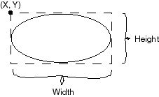

QUESTION 12:

If the size of the applet's drawing area is 150 (width) by 150 (height), where is the center of that area?
What is the size ( width, height ) of the square that holds a circle with a radius of radius ?
A circle.
drawOval()|  |
Look at:
drawOval( int X, int Y, int width, int height)
The measurements are in terms of pixels.
The (X, Y) position is relative to the upper left hand corner of the applet's
drawing area.
It gives the location of the upper left corner of a rectangle.
The width and height arguments give the horizontal
and vertical size of the rectangle.
The drawOval() method draws the oval that fits inside the rectangle
(it does not actually draw the rectangle.)
You do not give the method the center and radius of the circle you want.
If the size of the applet's drawing area is 150 (width) by 150 (height), where is the center of that area?
What is the size ( width, height ) of the square that holds a circle with a radius of radius ?